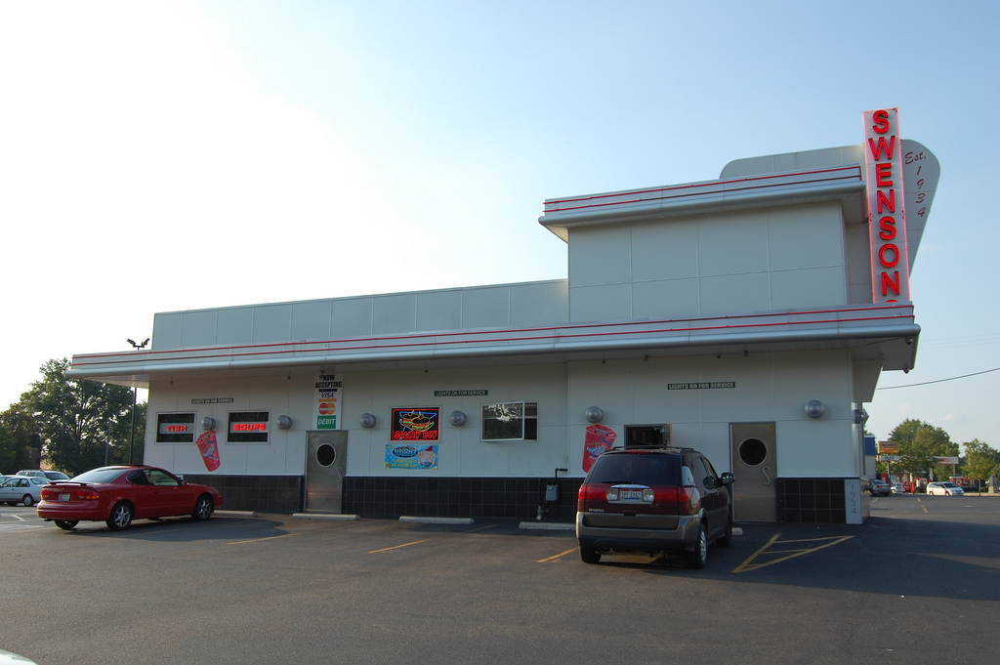

Geauga Lake/Cedar Point
"2 great parks for the price of 1!"
Geauga Lake was established in 1887 in what had been a local recreation area adjacent to a lake of the same name, the first amusement ride was added in 1889, and the park's first roller coaster – later known as the Big Dipper – was built in 1925.After multiple rebrandings, the park was closed in 2016.

Opened in 1870, Cedar Point is the second-oldest operating amusement park in the United States. The park has reached several milestones. It is the only amusement park in the world with five roller coasters taller than 200 feet and is the only park with roller coasters in all four height classifications. Cedar Point also received the Golden Ticket Award for "Best Amusement Park in the World" from Amusement Today for 16 consecutive years from 1997-2013. As of 2015, the park is the most visited seasonal amusement park in the United States with an estimated 3.51 million visitors. The park also has several buildings that are listed on the National Register of Historic Places.
Swensons Drive-In
Swensons Drive-In is a regional fast food restaurant chain with locations throughout Greater Akron, Ohio. Swensons' signature burger is the Galley Boy, a double cheeseburger with two sauces. The restaurant also sells more than 18 different milk shakes.
Wesley T. "Pop" Swenson started selling hamburgers at Buchtel High School out of a station wagon in 1933. In 1934, he opened a restaurant on South Hawkins in Akron, near Market Street.

The Civic Theatre
The Akron Civic Theatre, built in 1929 as Loew's (Akron) Theatre, is a theatre in Akron, Ohio. It is one of only sixteen remaining atmospheric theatres designed by John Eberson in the United States and is an excellent example of the great movie palaces of the 1920s. The Akron Civic Theatre is the last remaining theater of 11 opened by Marcus Loew, founder of the Loew's theater chain. The Civic is located on South Main Street in Akron and seats 5,000 people. The theatre has been exhibiting shows and special events for 88 years, and is known as "The Jewel on Main Street".

The Soap Box Derby
The Soap Box is a youth soapbox car racing program which has been run in the United States since 1934. World Championship finals are held each July at Derby Downs in Akron, Ohio. Cars competing in this and related events are unpowered, relying completely upon gravity to move. Today there are broader categories that extend the age range to younger racers and permit adults to assist in construction. This is especially helpful for younger children who cannot use power tools, as well as to provide an outlet for adults.